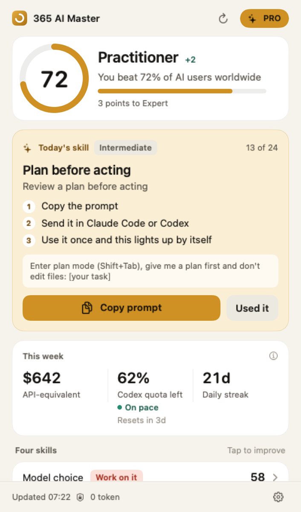
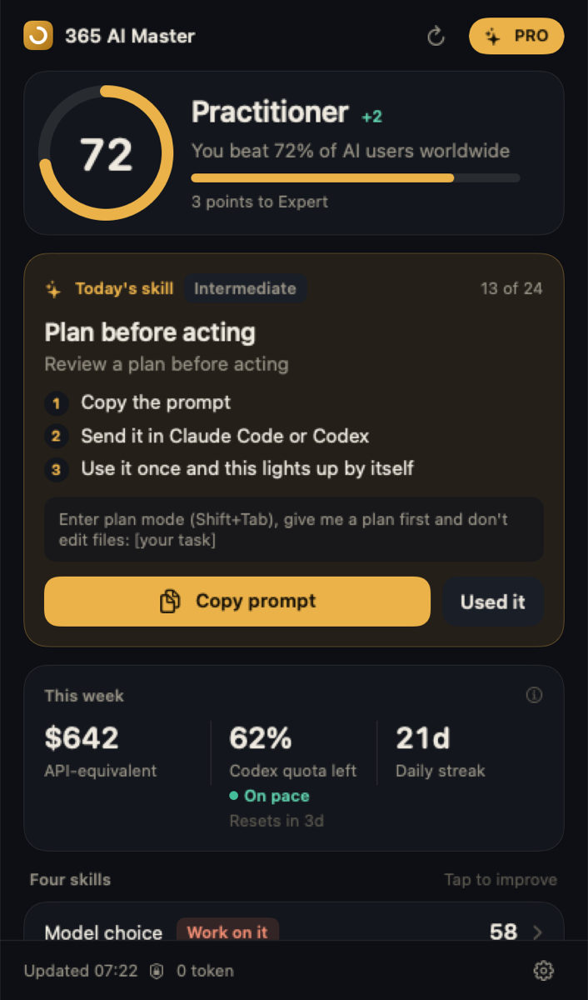
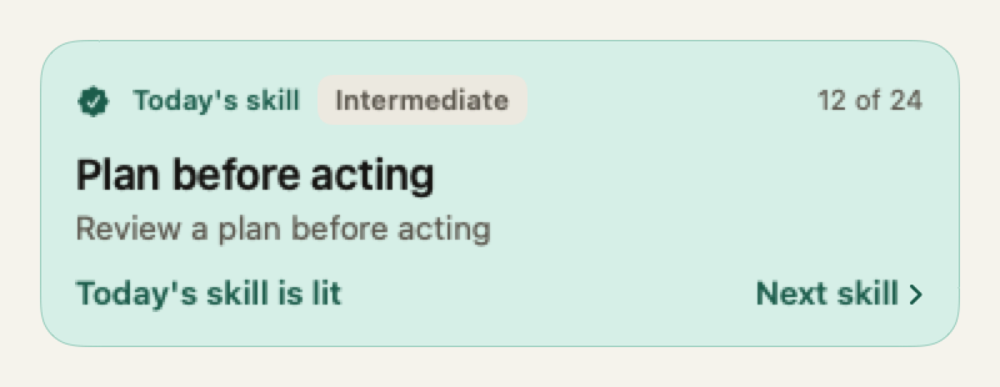
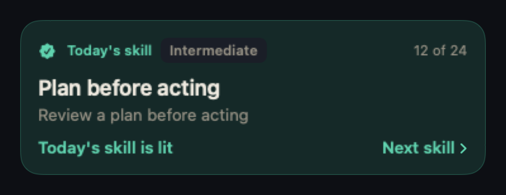
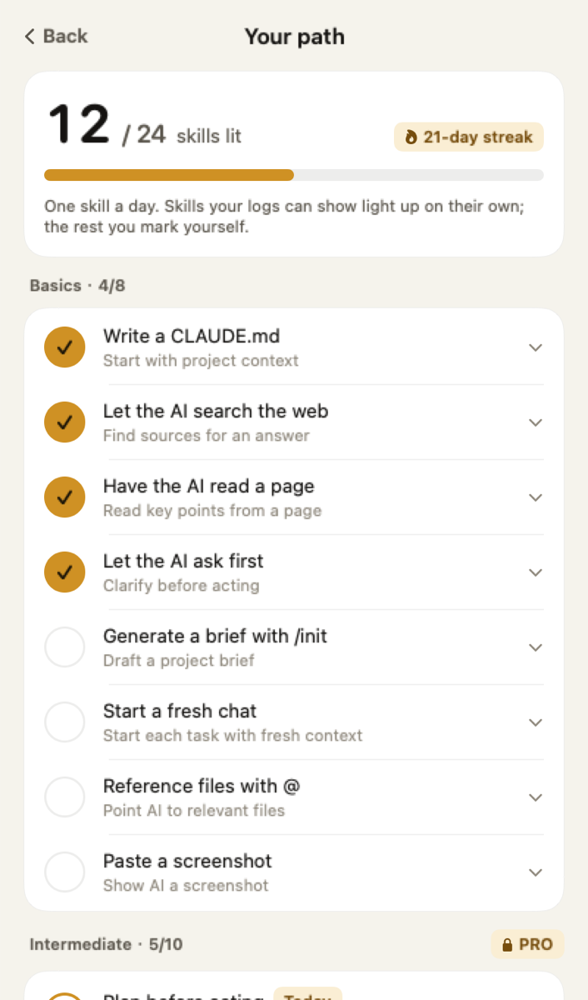
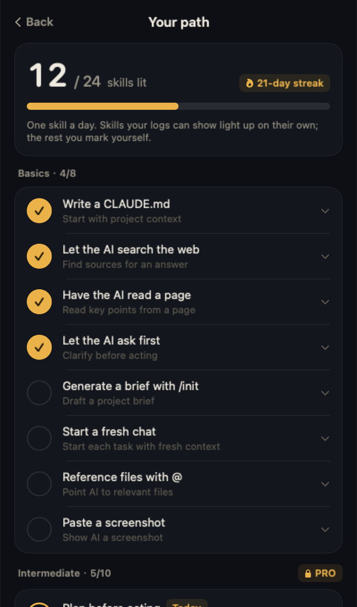
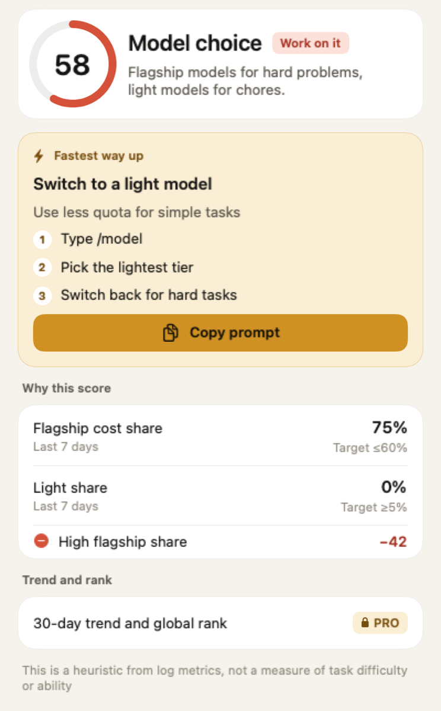
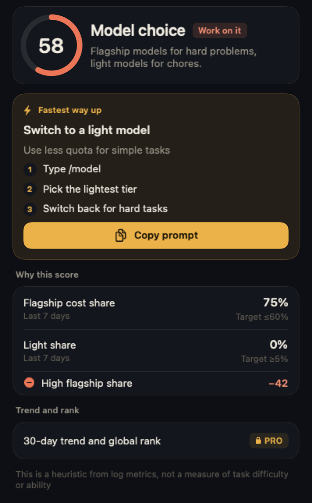

Where you stand
One score from 0 to 100 and five ranks, from Novice to Master. Four skills scored on their own: model choice, focus rhythm, context care and reuse.
A menu-bar coach for Claude Code and Codex
It reads the AI usage logs already on your Mac, tells you where you stand, and picks the one skill to practise today. Use it once and it lights up on its own. Everything runs on your Mac, and it never spends a token.


No dashboards, no setup. Open it and you know where you are, what to do today, and how your week is going.
One score from 0 to 100 and five ranks, from Novice to Master. Four skills scored on their own: model choice, focus rhythm, context care and reuse.


One skill you haven't used yet, with a prompt you can paste straight in. If your logs can show it, it lights up after one use. If not, you tick it yourself.
Your week priced at public API rates, plus how much Codex quota is left, when it resets, and whether you're on pace.
Other tools tell you how much you used. 365 tells you how well you used it, then helps you learn the next move.
A small gold dot next to your score means today's skill is waiting.
Every skill comes with a prompt that's ready to use.
Just do your normal work. Nothing extra to click, no forms to fill.
On the next refresh, 365 sees it in your local logs. The skill lights up and your path moves forward.


Every skill comes from how people really work: a CLAUDE.md, Plan mode, sub-agents, MCP, hooks, worktrees. Nail the basics, then climb.
Open any skill and you see your own numbers: how much went to flagship models, how much to light ones, and the target. Then the fastest fix, with a prompt to copy.


0tokens. Scoring never calls an AI
and never touches your quota.
The scoring rules are open source. The same records always produce the same score.
~/.claude and ~/.codex. Read-only.The free plan is useful on day one. Upgrade to Pro when you want the whole 365 days.
Free
$0
Pro
$12 / year
Founding price · about $1 a month
No card for the trial. It goes back to Free when it ends. Once payments open: card, Apple Pay, WeChat Pay and Alipay.
No. Everything is computed on your Mac with rules. It never calls an AI model and never sends your records to one.
Claude Code and Codex are fully supported. Gemini CLI, OpenCode and Qwen Code are detected and being added.
Four skills, each out of 100, weighted into a total: model choice, focus rhythm, session tidiness, and how much repeat work you've turned into skills. Every skill shows your numbers next to the target, and the rules are open source.
They show how much quota you used. 365 shows how well you used it, picks what to practise today, and confirms in your logs that you actually did. It shows your quota too, but that's the small part.
From people who chose to join the anonymous ranking. Until 20 people take part, you only see an early rank. Everything else works without joining.
Not yet. Mac only for now.
The 14-day trial costs nothing. After paying, contact us with your receipt for a refund.
Download, open, check your score. The first skill takes five minutes.
Download free for Mac